08. Make something big
Project
The frame of my final project is done this way. So instead of do some random project Idecided to work on this. It's pretty complex and I'm still waiting for the industrial parts (linear guides, screws, motors, etc.) to integrate.
this caused a delay, but here the work in progress. I hope to be able to do a test before the 15th of April.
3D file
Due to the complexity of the frame I can't design it directly in 2D. Here a screenshot of the 3D version. 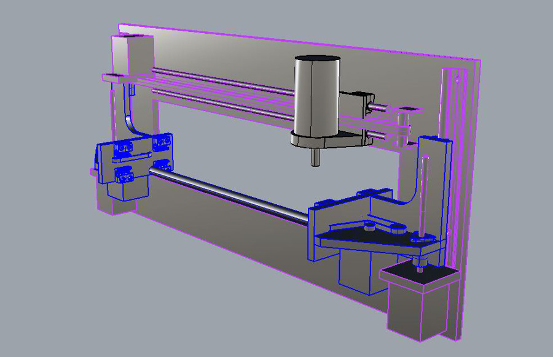
How to make a complex file for the CNC machine
I had the problem of designing somethign pretty complex that must consider all the connection with electronic and mechanical componentssome of them, not exhisting yet. I used Rhinoceros 3D, but the technique works pretty well with other software as well.
Here how i did it, hoping to be useful for others in my same situation.
Start from a simple 3D file
The firs step was to make a simple 3D description of the frame, divided into the functional units
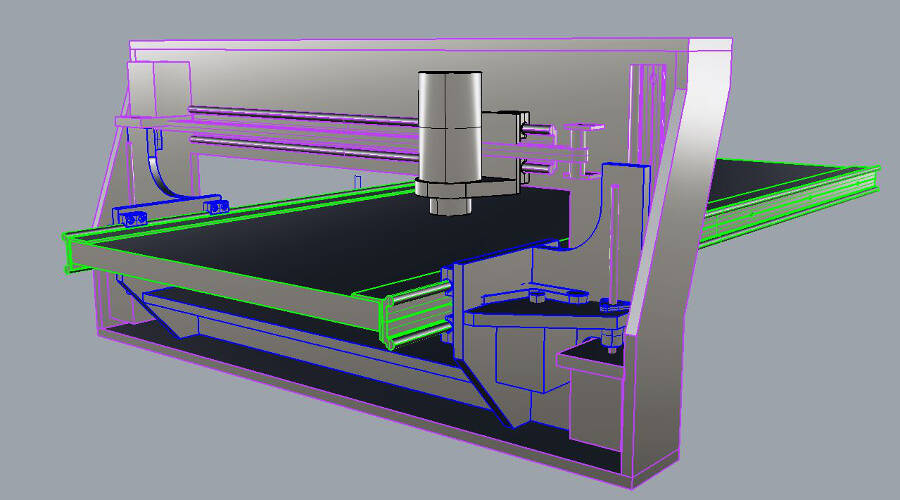
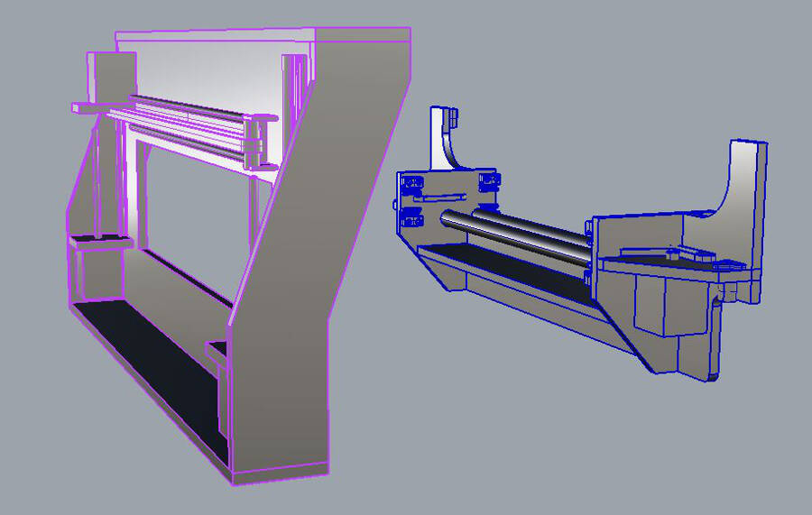
Add all the feature to the pieces
One by one you take all the profile of the pieces and design the features needed, like holes, pockets and joints.
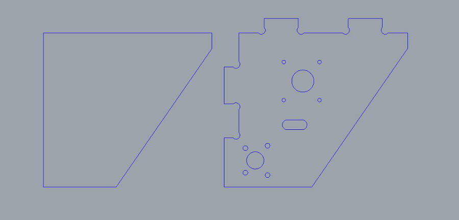
Extrude and put back the edited profiles
After the previous step, you should have a more precise idea of the pieces and the features needed. Extrude the curves and place the piece back in position.
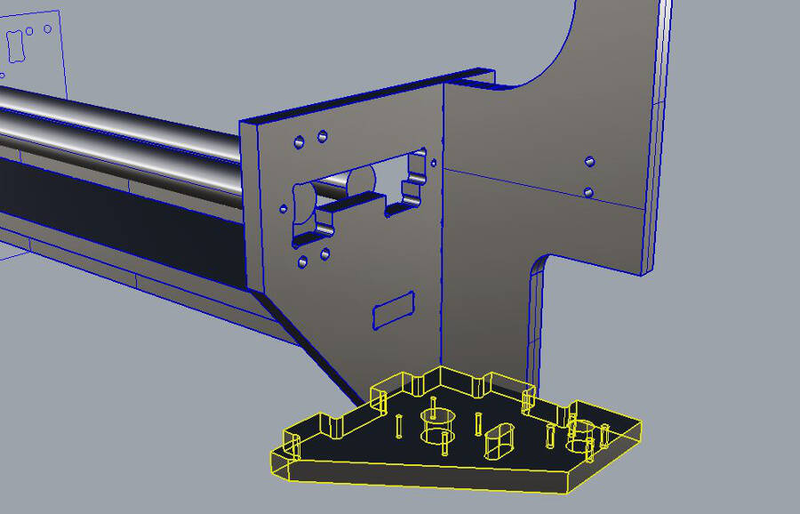
Copy the profile and make a boolean difference
To be sure the joints match, the easier way is to do a boolean difference. This gives you a precise feedback of the position. Here an exemple:
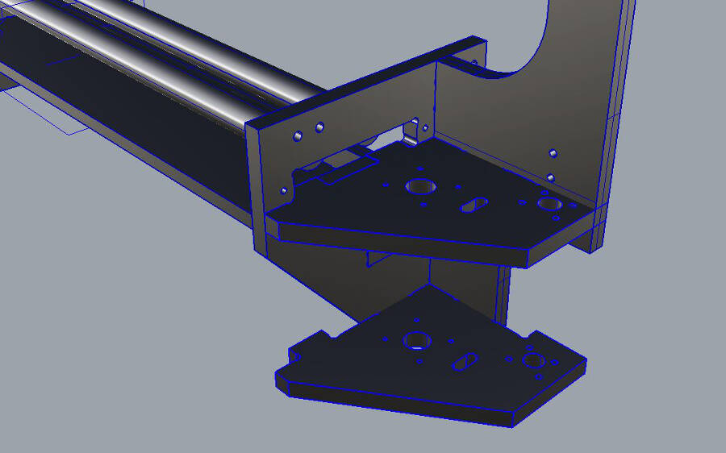
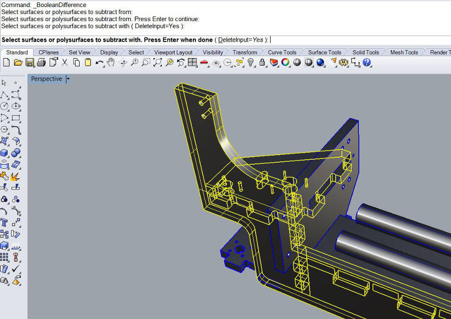
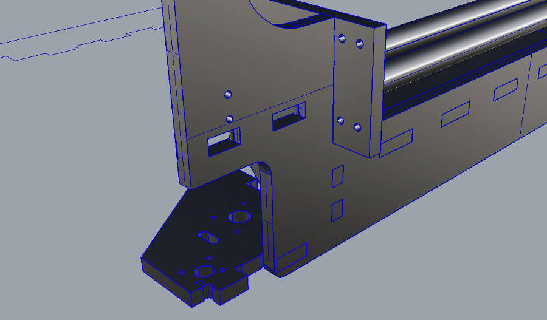
Refine the curves
To properly fit together it's important to don't forget the round divots to make room for the other piece's corner. To reduce the visibility of the divot without make it too weak i use a diameter 0.5mm bigger that the mill end and i make the corner of the cut touch the circle. I tried to use the exact same diameter, but it' pretty risky in ithis case: if the dxf you export is not very precise, i happens that the software is considering the cut too small to do.
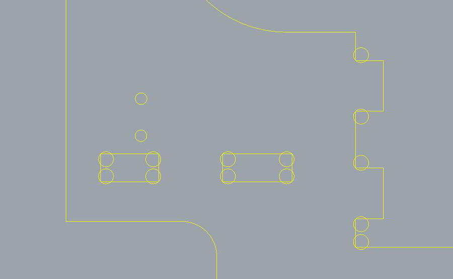
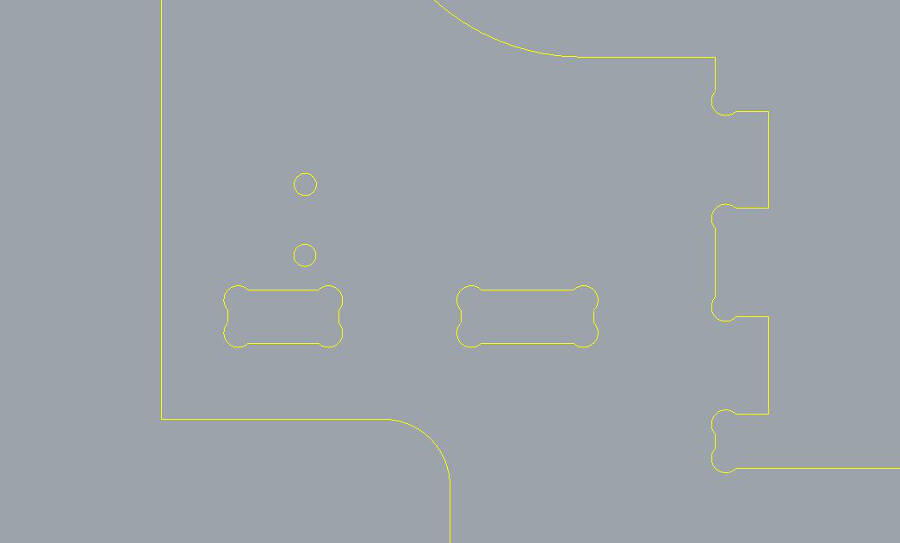
Repeat the operation for all the pieces
What's shown for the first profile must be done for all the pieces. Obviously identical pieces and (sometime)simmetrical pieces con be designed just once.
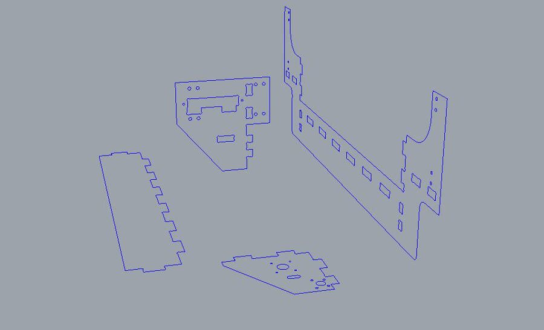
assemble the 3D files
After you extruded the profiles to make the 3D parts, it's good to assemble the pieces together to check for mistakes, interferences, and improvements. Check first just the connections between the pieces to mill, then add all the other componenets, such as 3D printed parts, elctronic and mechanical parts.
 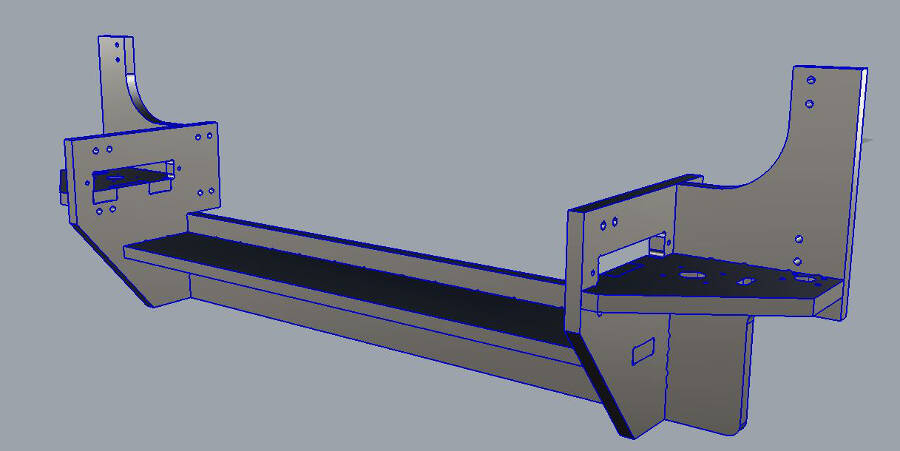
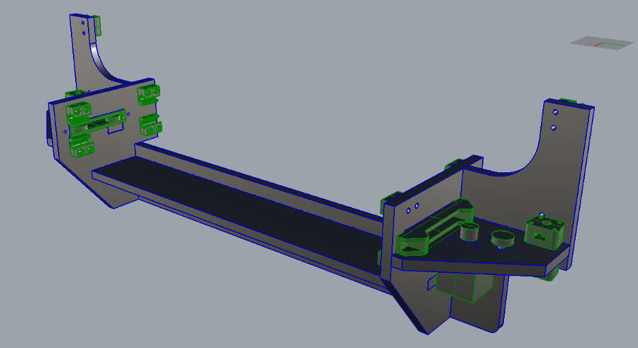
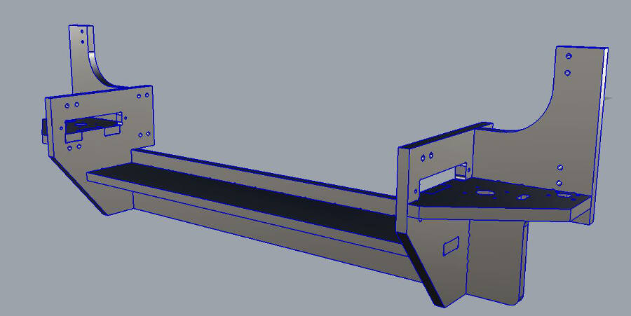
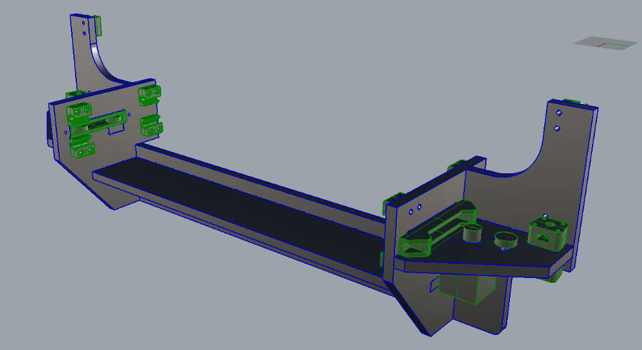
Repeat the assembly for other functional part and for the final object
Just follow the previews steps to assemble and check all the functional units and the final assembly. When you get to a complete 3D version, you can use it to edit the profiles (adding holes, cuts, etc.), measure distances, etc.
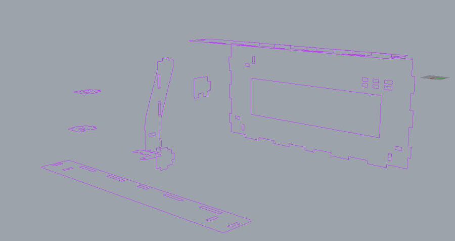
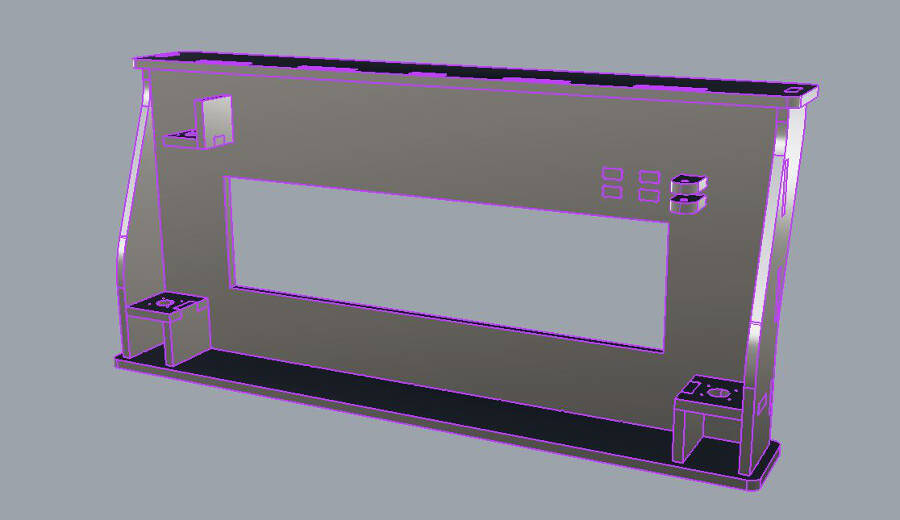
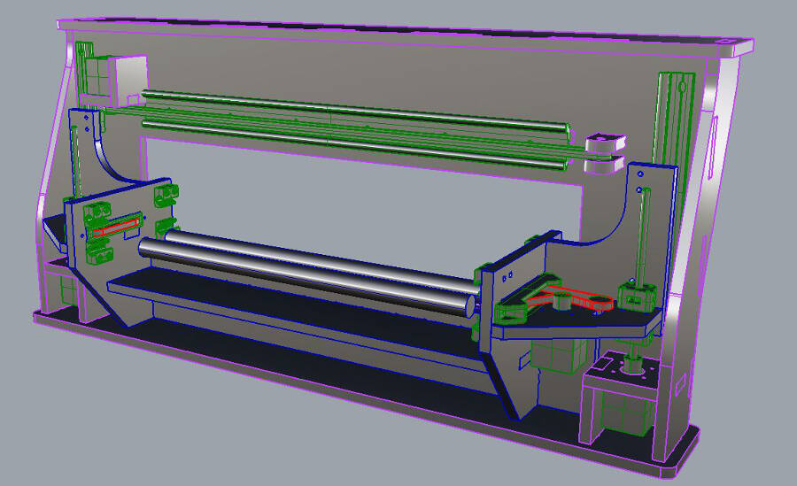
here the cutting file